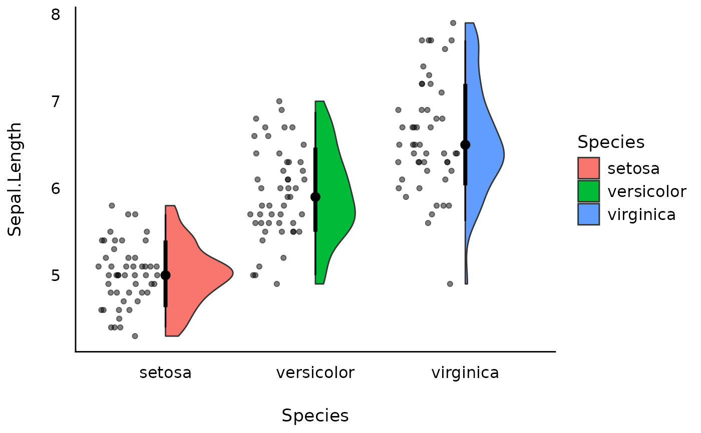
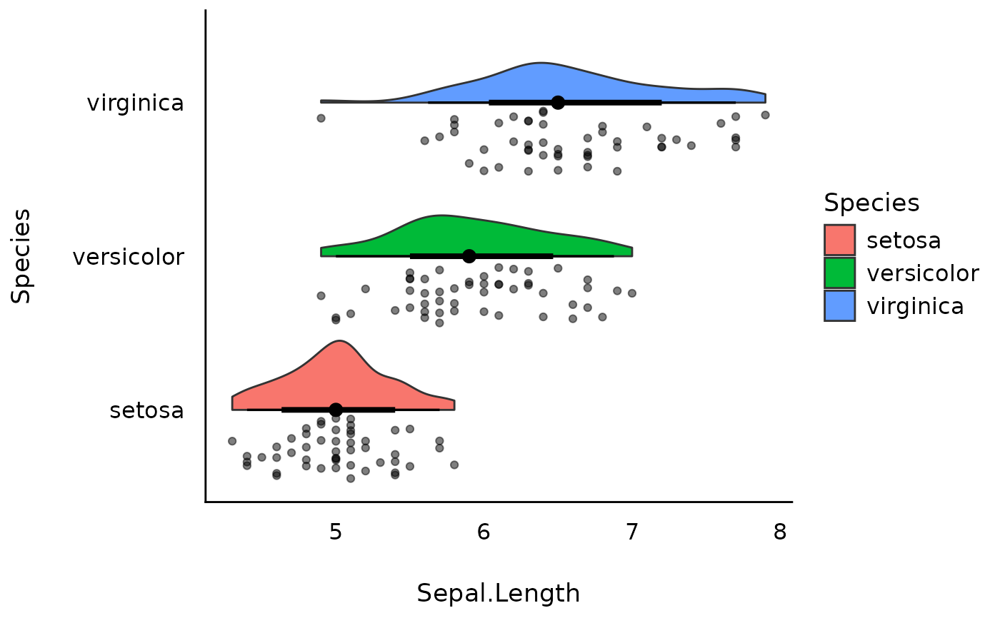
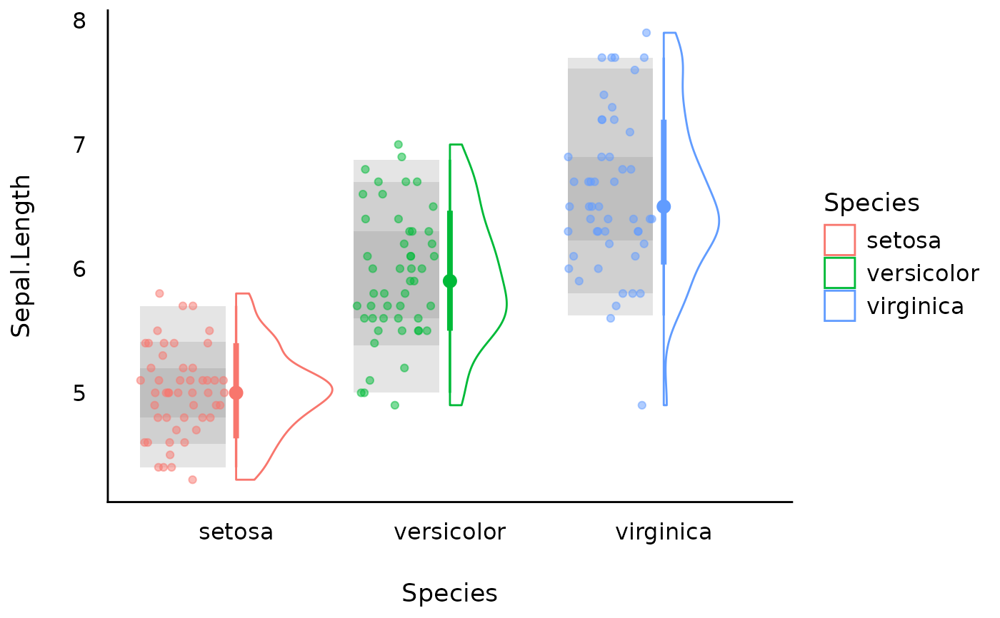

Create a raincloud plot, which shows, for each group, the distribution of a
numeric variable as a half violin (the cloud), the median with quantile
intervals, and the raw observations as jittered points (the rain). The
half violins and the intervals are drawn with geom_violinhalf(), so this
function needs the ggdist package (version 3.3.3 or later). Each half
violin extends to the right of its position (up, in a horizontal plot), and
the points are jittered in a band on the other side, from 0.45 to 0.05 times
the spacing of the categorical axis away from the position (or closer, for a
narrow width). Optionally, the quantile intervals of each group can be
shaded behind its points, for example as a background for estimated means
and their confidence intervals. Dodged groups, as with fill mapped to a
second variable, are not supported: the half violins are dodged, but the
points and the shading of all groups at a position share one band, and the
shading pools their values. The categorical axis must be discrete.
Usage
geom_raincloud(
mapping = NULL,
data = NULL,
trim = TRUE,
scale = c("area", "count", "width"),
interval = TRUE,
shade = NULL,
seed = 1,
...,
size_points = 1.5,
alpha_points = 0.5,
color_points = NULL,
fill_shade = "grey50",
show.legend = NA,
inherit.aes = TRUE
)Arguments
- mapping
Set of aesthetic mappings created by
aes(). If specified andinherit.aes = TRUE(the default), it is combined with the default mapping at the top level of the plot. You must supplymappingif there is no plot mapping.- data
The data to be displayed in this layer. There are three options:
If
NULL, the default, the data is inherited from the plot data as specified in the call toggplot().A
data.frame, or other object, will override the plot data. All objects will be fortified to produce a data frame. Seefortify()for which variables will be created.A
functionwill be called with a single argument, the plot data. The return value must be adata.frame, and will be used as the layer data. Afunctioncan be created from aformula(e.g.~ head(.x, 10)).- trim
If
TRUE(default), trim the tails of the half violins to the range of the data. IfFALSE, extend the tails asggplot2::geom_violin()does.- scale
If
"area"(default), all half violins have the same area (before trimming the tails). If"count", areas are scaled proportionally to the number of observations. If"width", all half violins have the same maximum width.- interval
Logical. If
TRUE(default), add the median and the 66% and 95% quantile intervals of each group at its position, as ingeom_violinhalf().- shade
A numeric vector of coverages between 0 and 1, such as
c(0.5, 0.8, 0.95). For each coverage, a rectangle behind the points of each group spans the central quantile interval of the group's values (stats::quantile(), type 7, without missing values), computed on the scale of the axis (after a transformation such asscale_y_log10()). Each rectangle has an alpha of 0.2, so the inner intervals, where the rectangles overlap, are shaded darker. IfNULL(default), nothing is shaded.- seed
The random seed of the jitter of the points, a single whole number. The same seed gives the same jitter.
- ...
Other arguments passed to
geom_violinhalf(), such asfill,alpha,bw, or.width. They do not reach the points or the shading, except forwidth,height, andna.rm. Sopositionmoves only the half violins and the intervals. Awidth(orheight, in a horizontal plot) is the width of a whole violin, as ingeom_violinhalf(), so each half violin and the band of the points take half of it.flip = TRUEis not supported, because the half violins would cover the points.- size_points, alpha_points, color_points
The size, transparency, and color of the points. If one of them is
NULL, the points take the matching aesthetic (size,alpha, orcolour) instead. By default, onlycolor_pointsisNULL.- fill_shade
The fill color of the shaded intervals.
- show.legend
Should the half violins be included in the legends? The points and the shading are never included.
- inherit.aes
If
FALSE, overrides the default aesthetics, rather than combining with them. This is most useful for helper functions that define both data and aesthetics and shouldn't inherit behaviour from the default plot specification, e.g.annotation_borders().
Examples
library(ggplot2)
library(see)
ggplot(iris, aes(x = Species, y = Sepal.Length, fill = Species)) +
geom_raincloud() +
theme_modern()

# A horizontal raincloud plot
ggplot(iris, aes(x = Sepal.Length, y = Species, fill = Species)) +
geom_raincloud() +
theme_modern()

# Shade the 50%, 80%, and 95% quantile intervals behind the points
ggplot(iris, aes(x = Species, y = Sepal.Length, colour = Species)) +
geom_raincloud(shade = c(0.5, 0.8, 0.95)) +
theme_modern()
